Referentes
H.R. Giger
Pintura / escultura / diseño
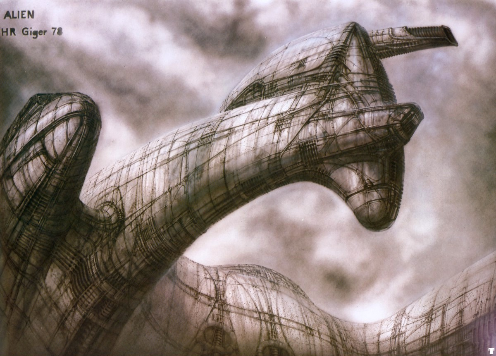
Wreck II
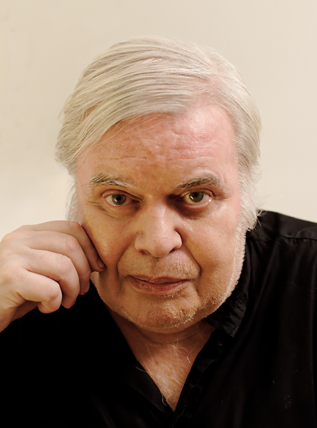
H.R. Giger
Hans Ruedi Giger (1940–2014) fue un artista surrealista suizo conocido por sus visiones biomecánicas que fusionan formas humanas con maquinaria. Su estética oscura y orgánica influyó profundamente en el arte contemporáneo, el cine y el diseño industrial, especialmente a través de su trabajo en la película Alien.
Franz Kline
Pintura / expresionismo abstracto
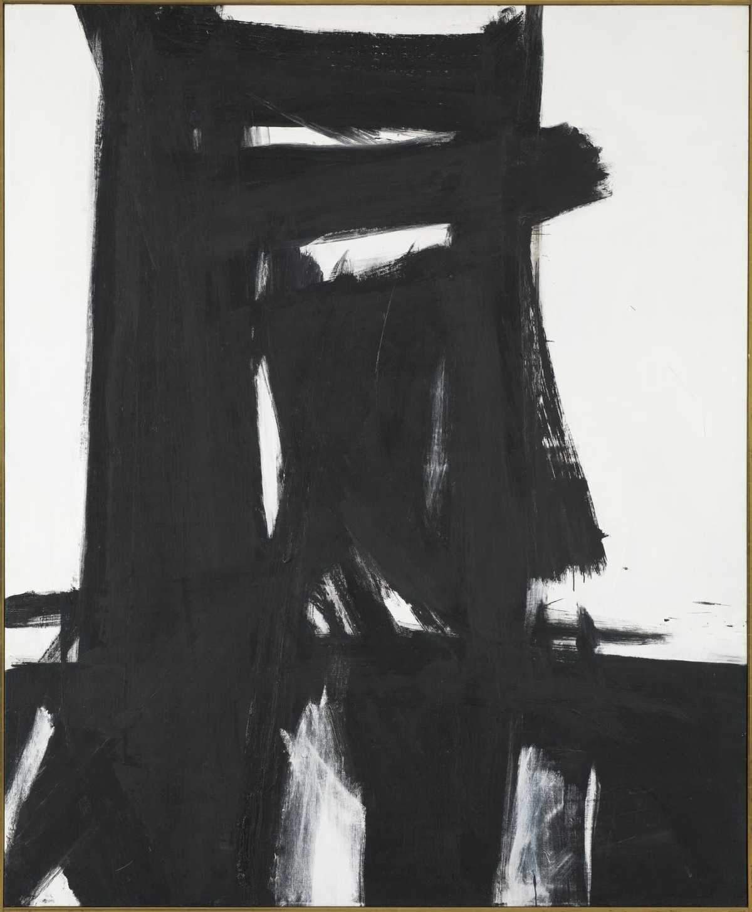
Meryon
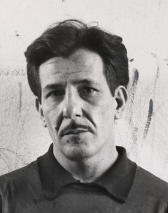
Franz Kline
Franz Kline fue un pintor estadounidense asociado con el movimiento del expresionismo abstracto. Es conocido por sus lienzos de gran formato, dominados por audaces trazos negros sobre fondos blancos, que evocan energía, estructura y movimiento. Su obra marcó una de las vertientes más gestuales y arquitectónicas de la pintura de posguerra en Estados Unidos.
Florent Lebrun
Ilustración / arte digital
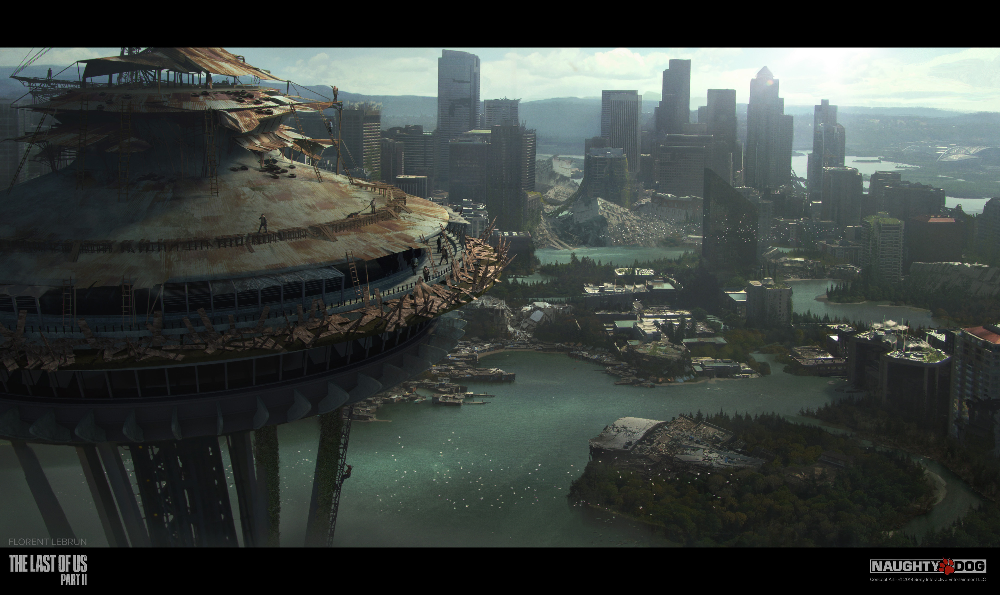
Space Needle comp
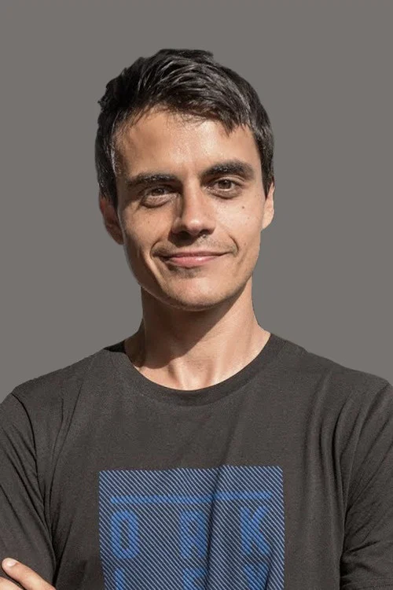
Florent Lebrun
Florent Lebrun es un artista gráfico y diseñador conceptual contemporáneo francés conocido por su trabajo en la industria del entretenimiento. Su estilo combina técnicas digitales con una estética cinematográfica, desarrollando mundos visualmente complejos para videojuegos, películas y proyectos personales de fantasía y ciencia ficción.
Kay Sage
Pintura / surrealismo
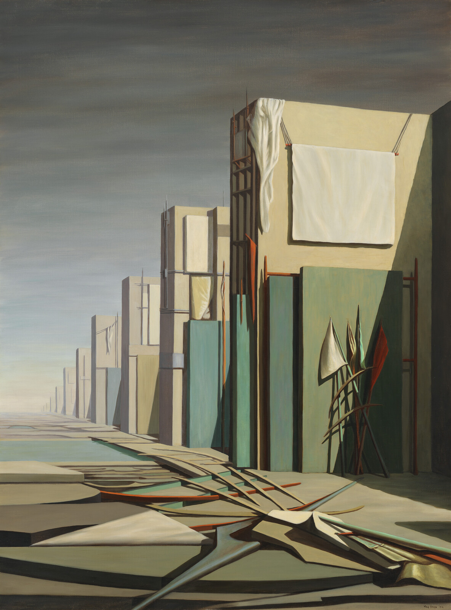
No Passing
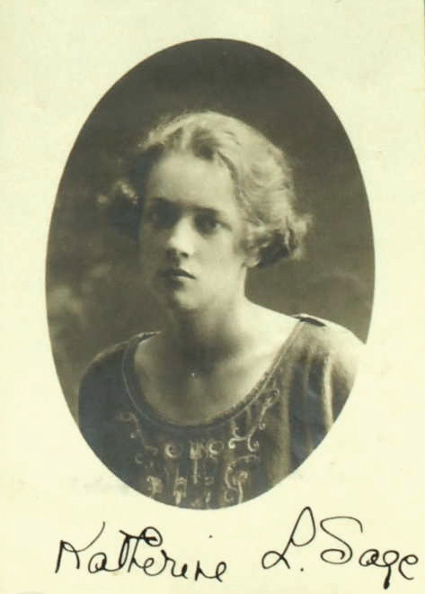
Kay Sage
Kay Sage (1898–1963) fue una pintora y poeta surrealista estadounidense, conocida por sus paisajes oníricos arquitectónicos y su estilo preciso y melancólico. Su obra explora el aislamiento y la estructura, integrando influencias del surrealismo europeo con una sensibilidad introspectiva.
Moebius
Cómic / ilustración / bande dessinée
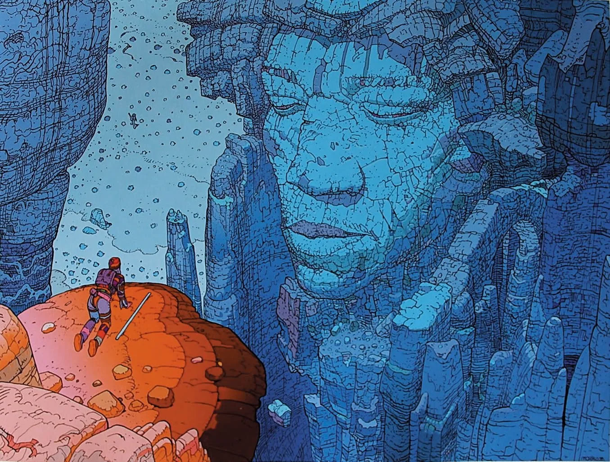
biografía de Hendrix
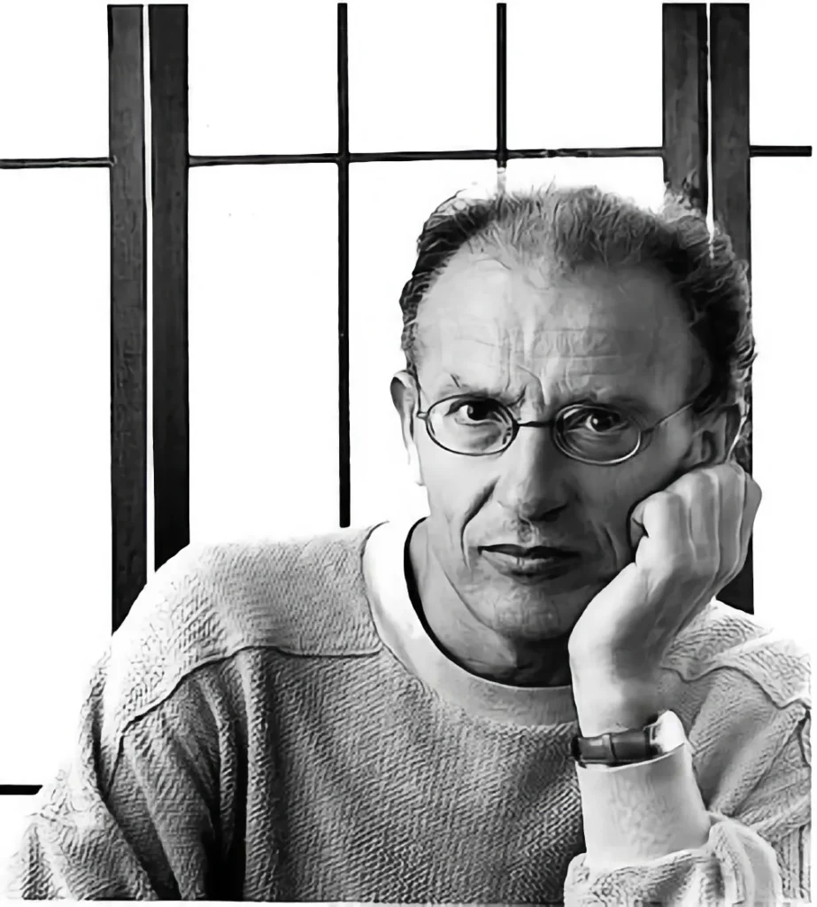
Jean Giraud (Moebius)
Moebius fue el seudónimo artístico de Jean Giraud (1938–2012), historietista, ilustrador y diseñador francés. Reconocido por su imaginación visual sin límites, transformó la narrativa gráfica moderna e influyó en la ciencia ficción, la fantasía y el diseño cinematográfico internacional.
Antoni Tàpies
Pintura / escultura / arte matérico
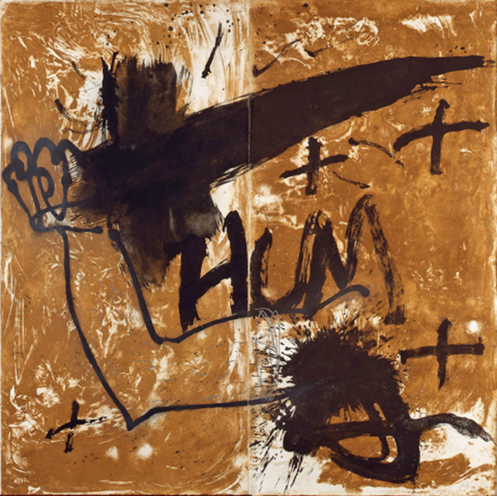
Daga / Acic-ganivet
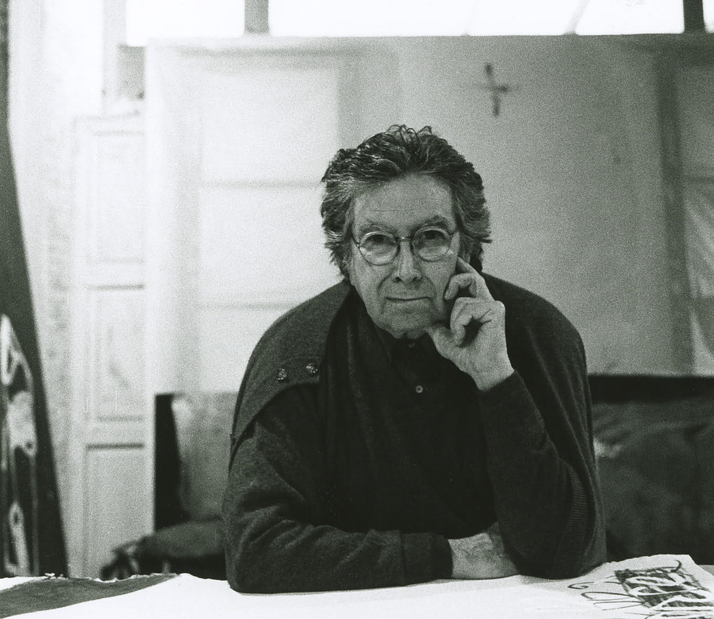
Antoni Tàpies
Antoni Tàpies (1923–2012) fue un pintor, escultor y teórico del arte español, ampliamente reconocido como una figura clave del arte abstracto europeo de posguerra. Su obra combina materias humildes con una intensa carga simbólica, explorando la espiritualidad, la materia y la condición humana.